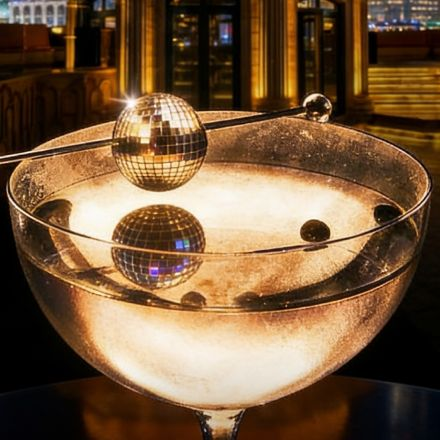

watch / Watch
Disco Ball Fridays
Weekly Friday disco and house music night at Skyline Dome, with a spinning disco ball, skyline views, and classic disco blended with modern house.

DateFridays to Jun 26
Time18:00-late
VenueThe Dome
DistrictHuangpu
Sounddisco, house, rooftop
PriceNot listed
Age / IDNot listed
Source layerwatchlist
Intensitysoft
Credibilityunconfirmed
Event Tags
Simple tags for sound, room context, ticket/source status, and details that still need a source check.
How We Recommend This
- RecommendationListed because the Disco Ball Fridays series provides a disco/house-leaning rooftop option for readers on Friday evenings at Skyline Dome.
- Best forBest for readers who want a disco-leaning rooftop or social-dancefloor-adjacent Friday night.
- Verify before goingRecheck the latest SmartShanghai page, lineup, ticket availability, and door/table policy before making plans.
- Source confidenceWatch-level confidence from SmartShanghai listings page; verify with the venue or a dedicated detail page before treating it as a pick.
Lineup and Notes
- Lineup TBADJ lineup was not detailed in the public source; check the event page or venue channel for the latest names.
Source Trail
- SmartShanghaiwatchlist / checked 2026-06-18
Trust Ledger
- Last checked2026-06-18
- Selection basisIncluded for source visibility, room fit, and these editorial signals: low techno fit, date route, rooftop, disco/house, verify first, recurring.
- Commercial relationshipNo paid placement recorded.
- Correction routeSend source fixes through RED 980793145 or the corrections policy.
- PolicyHow We Recommend / Corrections